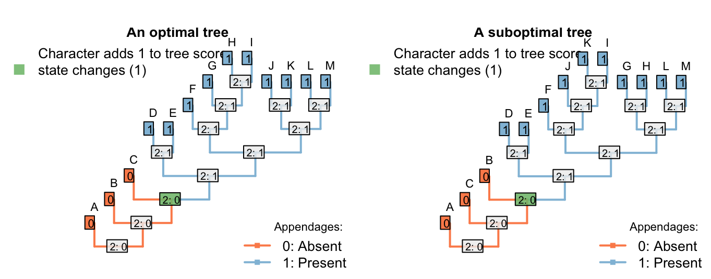
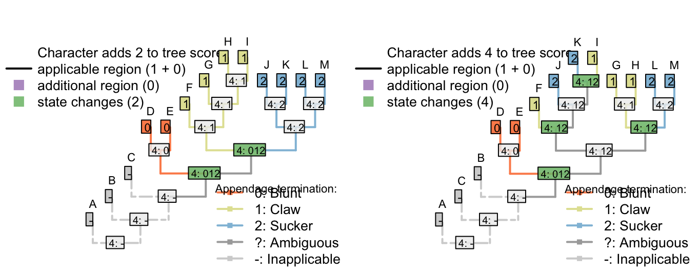
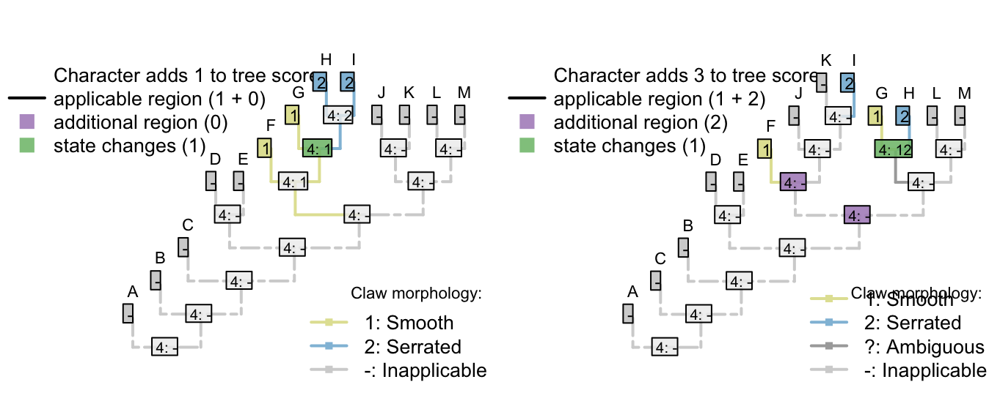
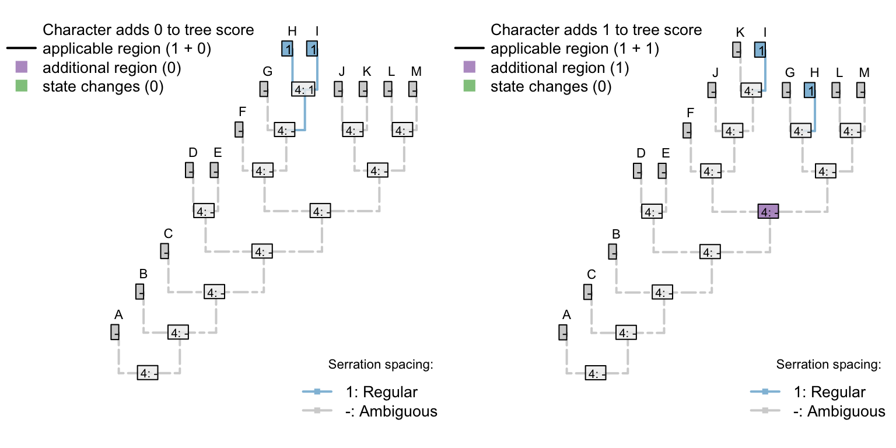

4 Coding data
The availability of our algorithm has some implications for how investigators might choose to code characters.
4.1 Multiple dependencies
It’s not a problem to have characters dependent on characters that are dependent on characters. Consider the following characters, whose descriptions are written in order to emphasize their heirarchical nature (following the recommendations of Sereno, 2007):
Appendages: (0), absent; (1), present.
Appendages, termination: (0), blunt; (1), sucker; (2), claw.
Appendages, suckers, morphology: (0), round; (1), polygonal.
Appendages, claws, morphology: (0), smooth; (1), serrated.
The included taxa may or may not bear appendages; if they do, then the appendages may end either with either claws or suckers, or neither (but not both). Claws come in two flavours, smooth and serrated; suckers come in two shapes, rounded and polygonal.
If character 1 (appendages) is absent, then characters 2–4 are inapplicable. Otherwise, charcter 2 (appendage termination) must take one of the three applicable values.
If character 2 (termination) has state 0 (blunt), then characters 3 and 4 (morphology of sucker / claw) are inapplicable.
If character 2 (termination) has state 1 (sucker), then character 3 (sucker morphology) is applicable and character 4 (claw morphology) is inapplicable.
If character 2 (termination) has state 2 (claw), then character 3 (sucker morphology) is inapplicable and character 4 (claw morphology) is applicable.
A sample character matrix might look like this:
| A | B | C | D | E | F | G | H | I | J | K | L | M | |
|---|---|---|---|---|---|---|---|---|---|---|---|---|---|
| Appendages: (0), absent; (1), present. | 0 | 0 | 0 | 1 | 1 | 1 | 1 | 1 | 1 | 1 | 1 | 1 | 1 |
| Appendage termination: (1), blunt; (2), sucker; (3), claw. | - | - | - | 1 | 1 | 2 | 2 | 2 | 2 | 3 | 3 | 3 | 3 |
| Sucker morphology: (1), smooth; (2), serrated. | - | - | - | - | - | 1 | 1 | 2 | 2 | - | - | - | - |
| Claw morphology: (1), round; (2), polygonal. | - | - | - | - | - | - | - | - | - | 1 | 1 | 2 | 2 |
Which would plot on a tree thus:

There’s no limit to the depth of recursion: one could add a further character
- Appendages, claws, serrations, spacing: (1), regular; (2), irregular.
that would be inapplicable in all taxa that lacked serrated claws.

To readers familiar with standard Fitch parsimony, it will be surprising to notice that the two trees receive a different score for this invariant character. When our algorithm is employed, invariant characters that contain inapplicable tokens can inform parsimony.
4.2 Invariant characters can inform parsimony
Consider a situation in which every tail in the observed taxa is blue – but the same complex molecular machinery is responsible for this blue colouration in every taxon.
If its underlying mechanism is considered biologically and evolutionarily meaningful, then a systematist might opt to include tail colour as an additional character, even though it is invariant in the taxa of interest. Reconstructions that attribute this common colouration to common ancestry will be more parsimonious than those that do not.
| A | B | C | D | E | F | G | H | |
|---|---|---|---|---|---|---|---|---|
| Tail: (0), absent; (1), present | 0 | 0 | 0 | 0 | 1 | 1 | 1 | 1 |
| Tail colour: (1), blue; (-), inapplicable | - | - | - | - | 1 | 1 | 1 | 1 |
| Body colour: (1), black; (2), white | 1 | 1 | 2 | 2 | 2 | 2 | 1 | 1 |
Let’s compare two trees. The first groups taxa based on the presence of tails; the other groups taxa based on body colour.


Where the tail has a single origin (one step), blue colouration also evolves once (zero steps), but body colour must change twice (two steps; total score = three). But where body colour changes only once (one step), the tail necessarily arises twice (two steps), meaning two independent origins of its distinctive blue colouration (one extra homoplasy; total score = four)
If the invariant tail colour character had not been included, both trees would have the same score, and there would be nothing to choose between them. As such, the inclusion or exclusion of invariant characters must be carefully evaluated: if there is a case that an invariant (ontologically dependent) character implies an exclusive common ancestry between those taxa that share it, then it should be included; if not, then it should be excluded.
4.3 Variable but ‘parsimony uninformative’ characters can inform parsimony
The same effect of course follows if a character has an additional state that is only observed in one taxon.
| A | B | C | D | E | F | G | H | I | |
|---|---|---|---|---|---|---|---|---|---|
| Tail: (0), absent; (1), present | 0 | 0 | 0 | 0 | 1 | 1 | 1 | 1 | 1 |
| Tail colour: (1), red; (2), blue; (-), inapplicable | - | - | - | - | 1 | 1 | 1 | 1 | 2 |
| Body colour: (1), black; (2), white | 1 | 1 | 2 | 2 | 2 | 2 | 1 | 1 | 1 |
Any tree that implies that blueness evolves multiple times will incur an additional penalty that would not have been encountered had the tail colour character been omitted.

Figure 4.1: Tail colour
4.4 This may not be desirable in neomorphic characters
The more general rule is that any tree that reconstructs the same state arising twice, independently, in an ontologically dependent character will incur a penalty relative to one that reconstructs that same state arising once.
With transformational characters, this is often a desideratum – as discussed above.
In certain neomorphic characters, however, it may not be desirable to penalise trees in which the absence of a character arises multiple times.
Let us imagine that there is a biological reason to believe that tails in a particular group lacked poisoned barbs when they first evolved: that is, poisoned barbs are an evolutionary innovation that can only be added to a tail once a tail is already present.
| A | B | C | D | E | F | G | H | I | |
|---|---|---|---|---|---|---|---|---|---|
| Tail: (0), absent; (1), present | 0 | 0 | 0 | 1 | 1 | 1 | 1 | 1 | 1 |
| Tail, poison barbs: (-), inapplicable; (0), absent; (1), present | - | - | - | 0 | 0 | 0 | 0 | 1 | 1 |
4.4.1 Three scenarios
The presence of poison barbs obviously contains grouping information – a reconstruction that attribute the presence of posion barbs to a single evolutionary gain in a common ancestor is parsimonious with respect to that character (even if it is less parsimonious with respect to another – e.g. the presence or absence of a tail).

Figure 4.2: One tail with barbs, one without
Consider a reconstruction in which a tail evolved twice, and barbs evolved twice. Here, the duplicate origin of barbs (as well as the duplicate origin of the tail) makes this reconstruction less parsimonious.

Figure 4.3: Two barb appearances
But what about a situation in which a tail evolved twice, and lacked barbs each time it evolved? Coding this character as transformational penalises the duplicate origin of the state “no poison barbs”, making this reconstruction less parsimonious.
If we expect a tail, when it evolves, to lack barbs, then the second origin of “no barbs” does not represent a homoplasy: it’s not a feature that has evolved twice, but rather an observation that something has not evolved twice.
The absence of poison barbs in the two ancestral tail-bearers has been inherited from a common ancestor that did not itself bear tail barbs (by virtue, in this instance, of not bearing a tail). This second non-origination should not, therefore, be penalized in this situation.

Figure 4.4: Two barbless appearances: second absence is penalized
This problem has arisen because the inapplicable token has been used in a character that is, in fact, applicable.
The statement “A tail is absent; the tail is red” is not logically consistent, which is why the inapplicable token is necessary. In contrast, the statement “A tail is absent; tail barbs are absent” is logically consistent, and the inapplicable token is not necessary. Instead, the ‘absence’ token should be employed instead of the inapplicable:
Figure 4.5: Two barbless appearances
The point here is that the inapplicable token ought only to be used in tips where a character description literally does not apply. As an example, De Laet (2017) contends that the character “Tail: absent/present” is inapplicable in an angiosperm. We disagree. Angiosperms do not have tails. “Tail” should be coded as absent in angiosperms.
One way to emphasize this distinction in character matrices is to reserve the 0 token to denote absence, and denoting states of transformational characters using the positive integers:
| A | B | C | D | E | F | G | H | I | |
|---|---|---|---|---|---|---|---|---|---|
| Tail: (0), absent; (1), present | 0 | 0 | 0 | 1 | 1 | 1 | 1 | 1 | 1 |
| Tail, poison barbs: (0), absent; (1), present | 0 | 0 | 0 | 0 | 0 | 0 | 0 | 1 | 1 |
| Tail, colour: (-), inapplicable; (1), red; (2), blue | - | - | - | 1 | 1 | 1 | 2 | 2 | 2 |
One implication of this coding strategy is that the loss of a tail (a single evolutionary event) causes the loss of all contingent characters – characters are not independent.
Figure 4.6: Presence of a tail and presence of poison barbs will have the same distribution if all tails have poison barbs. Loss and subsequent re-gain of a tail implies the same loss and re-gain of barbs.
If a poisoned tail was present in a lineage, then lost, then re-gained, would one expect the re-gained tail to also re-gain its poisoned barbs? One could spend some time evaluating whether this behaviour has a biological underpinning, or whether it is desirable – is a reconstruction that invokes the loss of a complex tail more parsimonious than one that invokes the loss of a simple tail?
Indeed, it would be straightforwards to construct an algorithm that does not penalise losses where the loss corresponds to the inferred loss of a parent character.
The underlying issue, however, is that both parsimony and the Mk model assume character independence; it is perhaps more fruitful to focus effort on developing models of evolution that take proper account of character non-independence.
4.4.2 Does absence contain phylogenetic information?
In some cases, the absence of a feature (e.g. serrations) may represent a transformational character and should thus be coded as such. But this decision is significant, and merits careful thought. A researcher may or may not be justified in including properties of a tail that occur in only one, or even in none, of the taxa of interest, for if absence is informative for parsimony, then such characters will influence tree topology: parsimony uninformative characters inform parsimony.
| A | B | C | D | E | F | G | |
|---|---|---|---|---|---|---|---|
| Tail: (0), absent; (1), present | 0 | 0 | 0 | 1 | 1 | 1 | 1 |
| Tail, margin: (-), inapplicable; (1), smooth; (2), serrated | - | - | - | {12} | {12} | 1 | 1 |
| Tail, glow-in-the-dark pigment: (-), inapplicable; (1), absent; (2), present | - | - | - | {12} | {12} | 1 | 1 |
| Tail, ability to generate electricity: (-), inapplicable; (1), absent; (2), present | - | - | - | {12} | {12} | 1 | 1 |
Note that each of the unobserved (i.e. always-absent) characters provides evidence against independent origins of the tail, in favour of independent losses:

Under the simple matrix presented above, the left-hand tree receives a score of five (two independent gains of the tail, plus the three ontologically dependent characters with an additional step each), whereas the right-hand tree scores but three (three independent losses of the tail; no steps in the ontologically dependent characters), making it more parsimonious.
If the three ontologically-dependent characters were coded as ‘absent’ (instead of inapplicable) when the tail was absent, then the left-hand tree would be preferred (with a score of 2 vs. 3).
The two trees are equally parsimonious (both scoring three) if tail margin is treated as a trasnformational character (inapplicable when tail absent) and the other characters are treated as neomorphic (absent when tail absent).
| A | B | C | D | E | F | G | |
|---|---|---|---|---|---|---|---|
| Tail: (0), absent; (1), present | 0 | 0 | 0 | 1 | 1 | 1 | 1 |
| Tail, margin: (1), smooth; (2), serrated | - | - | - | {12} | {12} | 1 | 1 |
| Tail, glow-in-the-dark pigment: (-), inapplicable; (0), absent; (1), present | 0 | 0 | 0 | {01} | {01} | 0 | 0 |
| Tail, ability to generate electricity: (-), inapplicable; (0), absent; (1), present | 0 | 0 | 0 | {01} | {01} | 0 | 0 |
References
Sereno, P. C. (2007). Logical basis for morphological characters in phylogenetics. Cladistics, 23(6), 565–587. doi:10.1111/j.1096-0031.2007.00161.x
De Laet, J. (2017). A note on Brazeau et al.’s (2017) algorithm for characters with inapplicable data, illustrated with an analysis of their Fig. 3d using anagallis, a program for parsimony analysis of character hierarchies. doi:10.13140/RG.2.2.31309.54245